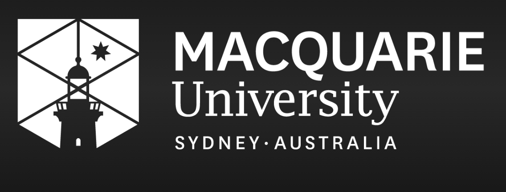

Introduction waving_hand

My name is Ank Agrawal and I am a Master of Actuarial Practice graduate from Macquarie University, Sydney.
I specialize in AI and Risk Analysis, bridging the gap between traditional actuarial science and modern data-driven solutions. My work focuses on building robust models that mitigate risk while leveraging the power of automated systems.
Recently, I completed an internship at LegittAI, where I conducted risk assessments for AI-driven legal tools. I am passionate about applying mathematical and statistical rigor to solve complex financial and operational challenges.
I have passed several IFoA Professional Exams including Actuarial Statistics (CS1), Risk Modelling and Survival Analysis (CS2), and Financial Mathematics (CM1).
Work handyman
-
gavel
AI/Risk Analyst Intern // LegittAI
Dec 2024 - Jan 2025
- ● Conducted risk assessments and accuracy evaluations for AI models used in legal document automation.
- ● Developed and implemented testing frameworks to validate model performance and identify potential edge cases.
- ● Collaborated with engineering teams to optimize AI prompts and logic for better risk identification.
LegittAI is an AI-driven legal technology company. During my internship, I focused on evaluating the risk and accuracy of automated legal document processing systems.
Education school
-
Master of Actuarial Practice // Macquarie University, Sydney
Jul 2024 - Dec 2025
- ● Status: Graduated (Master of Actuarial Practice)
- ● Consistently achieved strong academic performance.
- ● Professional Exams Cleared (IFoA):
- - CS1 (Actuarial Statistics)
- - CS2 (Risk Modelling and Survival Analysis)
- - CM1 (Actuarial Mathematics)
- - CB1 (Business Finance)
- - CB2 (Business Economics)

Academic Projects assessment
show_chart
Actuarial Risk Modeling
R, Statistics
Developed survival models and risk simulations as part of the CS2 professional exam curriculum. Analyzed mortality rates and frequency/severity of claims using various distribution models.
account_balance
Financial Mathematics Study
Excel, Python
Built comprehensive models for annuity valuations, bond pricing, and investment analysis as part of CM1 preparation. Explored the impact of varying interest rate environments on long-term liabilities.
psychology
AI Risk Assessment Framework
Machine Learning, Risk
Researched and drafted a framework for evaluating the operational and ethical risks associated with AI-driven decision systems in the legal and financial sectors.
Independent Projects biotech
trending_up
Dynamic Portfolio Optimization
Python, NumPy
Implemented a Markowitz Mean-Variance optimization model with custom risk constraints. Analyzed historical stock data to generate optimal asset allocations for varying risk appetites.
security
Cyber Risk Quantification
R, Statistics
Developed a frequency-severity model for cyber-attack data using Generalized Linear Models (GLMs). Estimated Expected Shortfall (ES) at the 99% confidence level for an enterprise risk profile.
forum
Financial Sentiment Bot
NLP, Python
Built a real-time sentiment analysis tool that monitors financial news feeds and scores headlines for potential market impacts using a fine-tuned BERT model.
Technical Skills code
Programming & AI
Python, Agentic AI, R, SQL
Experienced in automation scripting, building agentic AI workflows, and statistical modeling.
AI Tools & Frameworks
GitHub Copilot, Claude Desktop, Excel (VBA), Git
Leveraging modern AI assistants for rapid development and advanced financial modeling.
Theoretical Foundation
Actuarial Science, Statistics, Economics
Strong grounding in IFoA professional standards and risk modeling methodologies.